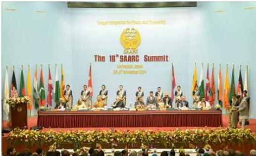
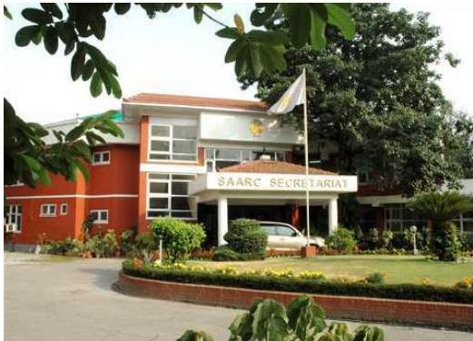
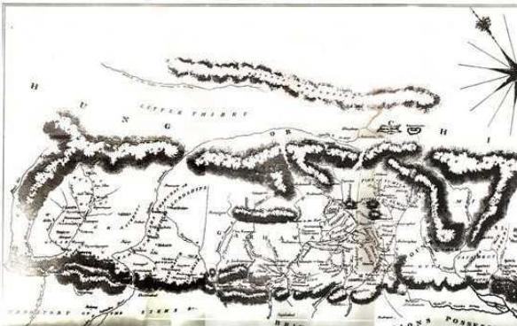
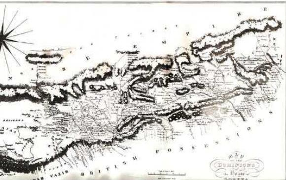

नेपालको परराष्ट्र नीति र अन्तर्राष्ट्रिय सम्बन्ध
१०.१ नेपालको परराष्ट्र नीति र यसका मूल आधारहरू
राणाकाल सुरु हुनुभन्दा अघि नेपालको वैदेशिक सम्बन्ध विस्तार हुन सकेको थिएन। राणा प्रधानमन्त्री जञ्जबहादुर राणाले राणाशासनलाई अक्षुण्ण र चिरस्थायी बनाउन अङ्ग्रेजहरूलाई खुसी पानें नीति अपनाएका थिए। यसै उद्देश्यले उनले भारतलगायत बेलायतको समेत भ्रमण गरेका थिए। जङ्गबहादुर राणाले अपनाएको नीतिलाई उनका उत्तराधिकारीहरूले पनि अपनाए। तर सन् १९४७ मा अङ्ग्रेजहरू भारतबाट फिर्ता हुन बाध्य भएपछि नेपालका राणा शासकहरू कमजोर बन्न पुगे। परिणामस्वरूप राणाशासनको पतन भई नेपालमा प्रजातन्त्रको स्थापना भयो। वि.सं. २००७ सालसम्म भारत, बेलायत, फ्रान्स र संयुक्त राज्य अमेरिका गरी चार मुलुकसँग दौत्य सम्बन्ध कायम भइसकेकाले राणाकालको अन्त्यतिर वैदेशिक सम्बन्ध विस्तारमा केही विविधीकरण देखिए पनि परराष्ट्र नीतिको ठोस आधार भने तयार भएको थिएन। राणाशासनको पतन भई प्रजातन्त्रको उदय भएपछि तत्कालीन एकतर्फी परराष्ट्र नीतिमा परिवर्तन आयो र नेपालले अन्तर्राष्ट्रिय सभा सम्मेलनमा सक्रियताका साथ भाग लिन थाल्यो। संयुक्त राष्ट्रसङ्घको मूल्य र मान्यताप्रति आस्था, असंलग्नता एवम् छिमेकी मुलुकहरूसँग मैत्रीपूर्ण सम्बन्ध नै नेपालको परराष्ट्र नीतिका प्रमुख आधार हुन्। नेपालको परराष्ट्र नीतिका प्रमुख आधारलाई निम्नानुसार उल्लेख गर्न सकिन्छ :
१. असंलग्नता
कुनै शक्तिराष्ट्रको सैनिक गठबन्धनमा संलग्न नरही अन्तर्राष्ट्रिय घटनाक्रमप्रति निरपेक्ष वा तटस्थ दृष्टिकोण अवलम्बन गर्नु नै असंलग्नता हो। असंलग्नता भनेको कुनै गठबन्धनबाट स्वतन्त्र रहनु हो तर विश्वघटनाप्रति मौन दर्शक बन्नु कदापि होइन। नेपाल प्रारम्भदेखि नै असंलग्न आन्दोलनमा सक्रिय रूपमा सहभागी हुँदै आएको छ।
नेपाल परिच्छेद/३३३
३३४/नेपाल परिचय
२. पञ्चशीलप्रति आस्था
अन्तर्राष्ट्रिय सम्बन्ध विस्तारका क्रममा पञ्चशीलका निम्नलिखित पाँच बुँदालाई प्रमुख आधारका रूपमा लिइएको छ, जुन नेपालको परराष्ट्र नीतिको एक महत्त्वपूर्ण आधार हो :
-
एकले अर्को मुलुकको स्वतन्त्रता, सार्वभौमिकता र क्षेत्रीय अखण्डताको सम्मान गर्ने
-
अर्काको आन्तरिक मामिलामा हस्तक्षेप नगर्ने
-
समानता र पारस्परिक हित कायम गर्ने
-
अनाक्रमण (एकले अर्को मुलुकविरुद्ध आक्रमण नगर्ने)
-
शान्तिपूर्ण सहअस्तित्वको भावनालाई स्वीकार गर्ने
३. संयुक्त राष्ट्रसङ्घप्रति आस्था
संयुक्त राष्ट्रसङ्घप्रति आस्था र विश्वास राख्दै विश्वशान्ति र राष्ट्र-राष्ट्रबीच मैत्री र सहयोग अभिवृद्धि गर्न यसको भूमिका र प्रभावकारिता बढाउनुपर्ने कुरामा जोड दिइँदै आएको छ । विश्वशान्तिको स्थापना गर्न संयुक्त राष्ट्रसङ्घअन्तर्गत लेबनान र इजरायलको सीमाक्षेत्र, युगोस्लाभिया र सोमालिया आदि मुलुकहरूमा शान्ति सेना खटाइएको छ ।
४. क्षेत्रीय सहयोग अभिवृद्धि गर्न जोड
छिमेकी मुलुकहरूबीच सहयोग र सम्भवदारी बढाउन सन् १९८५ मा स्थापित दक्षिण एसियाली क्षेत्रीय सहयोग सङ्गठन (सार्क) उपयुक्त हुने हुँदा यसको प्रभावकारिता र सुदृढीकरणका लागि नेपालले जोड दिँदै आएको छ । सार्क सचिवालयको स्थापना नेपालमा हुनुलाई यसै परिप्रेक्ष्यमा हेर्न सकिन्छ । यसैगरी नेपाल बहुपक्षीय प्राविधिक तथा आर्थिक सहयोगका लागि बङ्गाल खाडीको प्रयास (बिम्स्टेक), एसिया सहयोग वार्ता, साङ्घाई सहयोग सङ्गठन आदि जस्ता क्षेत्रीय सहयोग सङ्गठनमा समेत आबद्ध रहेको छ ।
५. निःशस्त्रीकरण
शास्त्रास्त्रको होडबाजीलाई न्यून गरी त्यस क्षेत्रमा भइरहेको अथाह धनराशिलाई शिक्षा, स्वास्थ्य आदि क्षेत्रमा लगानी गरी सामाजिक सेवाको स्तर बढाउनुपर्ने एवम् आणविक हातहतियार हटाउने कुरामा नेपालले आफ्नो आवाज बुलन्द बनाएको छ ।
६. भूपरिवेष्ठत मुलुकको हकहितको सुरक्षा
नेपाल एक सानो तथा विकासोन्मुख मुलुक भएकाले सबै भूपरिवेष्ठत मुलुकहरूले व्यहोर्नुपरेको समस्याको उचित रूपमा निराकरण गर्दै यी मुलुकको हकहित सुरक्षित गर्नुपर्ने कुरामा जोड दिँदै आएको छ ।
७. साना तथा अविकसित मुलुकहरूको हकहितको सुरक्षा
नेपाल एक सानो तथा विकासोन्मुख मुलुक भएकाले यसले आफू जस्ता मुलुकहरूको
हकहित अभिवृद्धि गर्न क्षेत्रीय र अन्तर्राष्ट्रिय मञ्चहरुमा जोड दिँदै आएको छ ।
८. समस्याको शान्तिपूर्ण समाधान
कुनै पनि अन्तर्राष्ट्रिय विवादहरूको शान्तिपूर्ण समाधान हुनुपर्ने कुरामा जोड दिँदै बल प्रयोग, धम्की तथा युद्ध कुनै पनि समस्याको स्थायी समाधान होइन भन्ने कुरामा नेपाल विश्वस्त छ ।
९. असल छिमेकीपनको भावना
नेपाल दुई ठूला-ठूला मुलुक (भारत र चीन) द्वारा घेरिएको सानो मुलुक भएकाले यी दुवै मुलुकसँग सन्तुलित र सुमधुर सम्बन्ध कायम गर्दै विश्वका अन्य मुलुकहरूसँग पनि मैत्रीपूर्ण सम्बन्ध कायम गर्ने नीति नेपालले लिएको छ ।
१०. दबाब र भेदभावको विरोध
नेपालले साम्राज्यवाद, उपनिवेशवाद, नवउपनिवेशवाद, विस्तारवाद, जात तथा रुझ्भेद, प्रभुत्ववाद आदिको खुला रूपमा विरोध गर्दै स्वाधीनता एवम् रुझ्भेदविरोधी आन्दोलनको समर्थन गर्दै आएको छ ।
११. स्वतन्त्र परराष्ट्र नीति
नेपालले विश्व रुझ्म्मञ्चमा कसैको अनुयायी नभई आफ्नो न्यायिक मन र विवेकको प्रयोग गरी स्वतन्त्र रूपमा आफ्नो स्पष्ट अवधारणा राख्दै आएको हुँदा नेपाल असंगलन राष्ट्र भए पनि विश्वमा घट्ने घटनाहरूब्रित संवेदनशील हुँदै आएको छ ।
१०.२ नेपालको अन्तर्राष्ट्रिय सम्बन्ध : ऐतिहासिक सिंहावलोकन
नेपाल दुई विशाल छिमेकी मुलुक भारत र चीनबीचमा अवस्थित एक भूपरिवेष्ठत राज्य हो । देशको अस्मितालाई जोगाइराख्न नेपाल कहिले तिब्बत र चीनसँग जुध्नुपन्यो त कहिले अङ्ग्रेजसँग । विगतमा ज्यादै कठिन दिनहरुमा पनि नेपाल कसैको अधीनमा रहेन, आफ्नो सार्वभौमसत्ता र स्वतन्त्रतालाई जोगाइराख्न सक्षम भयो ।
सन् १८१६ मार्च ४ (वि.स. १८७२) मा भएको सुगौली सन्धिपश्चात् नेपालको परराष्ट्र नीतिले नयाँ दिशा लिएको देखिन्छ भने बेलायतसँग कूटनीतिक सम्बन्ध स्थापना भएपछि नेपालको आधुनिक विश्वसँग नियमित सम्पर्क सुरु भएको मान्न सकिन्छ । नेपालको परराष्ट्र सम्बन्धको औपचारिक सुरुवात भने सन् १८५० मा जड्गबहादुर राणाले बेलायतको भ्रमण गरेसँगै प्रारम्भ भएको पाइन्छ । त्यस्तै, सन् १९२३ मा चन्द्रशमशेरका पालामा ब्रिटिस सरकार र नेपालबीच शान्ति र मैत्री सन्धिमा हस्ताक्षर भएको थियो । वि.स. २००७ सालको राजनीतिक परिवर्तनपश्चात् चीन, सोभियत सङ्घ र फ्रान्ससँग नेपालको दौत्य सम्बन्ध स्थापना भएपछि नेपाल अन्तर्राष्ट्रिय क्षेत्रमा प्रवेश गरेको हो । १४ डिसेम्बर १९५५ मा नेपाल संयुक्त राष्ट्रसङ्घको सदस्य
नेपाल परिचय/३३५
बनी एफ्रो एसियाली सङ्गठनको बाङडुङ सम्मेलनमा भाग लियो । सन् १९६१ देखि असंलग्न राष्ट्रहरूको शिखर सम्मेलनमा सम्मिलित भई सक्रिय सदस्यका रूपमा नेपालले आजपर्यन्त विश्वका विभिन्न मञ्चहरूमा भाग लिँदै आएको छ । असंलग्न शिखर सम्मेलनमा नेपालले उपनिवेशवाद, जातीवाद, रङ्गभेद नीति, भूपरिवेष्ठत राष्ट्रहरूको पारवहन अधिकार आदि विषयमा आफ्नो धारणा राख्दै आएको छ । असंलग्न परराष्ट्र नीतिकै कारण नेपालको अन्तर्राष्ट्रिय जगत्मा कुनै पनि बाह्य दबाब रहेको छैन र यो नै नेपालको परराष्ट्र नीतिको आधारस्तम्भ बन्न पुगेको छ ।
संयुक्त राष्ट्रसङ्घको घोषणापत्रअनुसार नेपालले वेलावेलामा निःशस्त्रीकरण, रङ्गभेद नीति उपनिवेशवादको विरोध एवम् कुनै पनि देशमा विदेशी फौजको हस्तक्षेप विनासर्त हटाउनुपर्दछ भन्ने दृष्टिकोण राख्दै आएको छ । फलस्वरूप नेपाल दुई पटकसम्म सुरक्षा परिषद्को सदस्यमा समेत निर्वाचित भयो । संयुक्त राष्ट्रसङ्घले गठन गरेका समितिहरूमा पनि नेपाल संलग्न भएको छ । असंलग्न परराष्ट्र नीतिले विश्व समुदायबीचमा नेपालको सकारात्मक छवि निर्माण गरेको छ । नेपालले संयुक्त राष्ट्रसङ्घअन्तर्गतका विभिन्न निकायहरूको सदस्यतासमेत प्राप्त गरेको छ । असंलग्न आन्दोलनको एक संस्थापक सदस्य भएको नाताले नेपाल विश्वशान्तिको कामना गर्दछ । नेपालको संविधानले नेपालको सार्वभौमसत्ता, भौगोलिक अखण्डता, स्वाधीनता र राष्ट्रिय हितको रक्षा गर्न कियाशील रहँदै संयुक्त राष्ट्रसङ्घको बडापत्र, असंलग्नता, पञ्चशीलको सिद्धान्त, अन्तर्राष्ट्रिय कानुन र विश्वशान्तिको मान्यताका आधारमा राष्ट्रको सर्वोपरि हितलाई ध्यानमा राखी स्वतन्त्र परराष्ट्र नीति सञ्चालन गर्न तथा विगतमा भएका सन्धिहरूको पुनरावलोकन गर्दै समानता र पारस्परिक हितको आधारमा सन्धि सम्भौताहरू गर्न गरी अन्तर्राष्ट्रिय सम्बन्ध निर्देशित हुने कुरा उल्लेख गरेको छ । यसै अनुरूप संयुक्त राष्ट्रसङ्घको बडापत्र, असंलग्नता, पञ्चशीलको सिद्धान्त, अन्तर्राष्ट्रिय कानुन र विश्वशान्तिको मान्यताका आधारमा नै हाल नेपालको परराष्ट्र नीति सञ्चालन हुँदै आएको छ । छिमेकी मित्रराष्ट्रहरू र अन्य सबै मुलुकसित आर्थिक, सामाजिक एवम् अन्य क्षेत्रमा समानताका आधारमा सहयोगात्मक सुसम्बन्ध कायम गरी नेपालमा शान्तिलाई अन्तर्राष्ट्रिय मान्यताको आधारमा संस्थागत गर्दै जाने नीति राज्यले अवलम्बन गर्नेछ भन्ने व्यवस्था गरी देशको परराष्ट्र नीति र अन्तर्राष्ट्रिय सम्बन्ध अगाडि बढाउन नेपाल प्रतिबद्ध रहेको प्रस्ट हुन्छ ।
हाल नेपाल सङ्घीय लोकतान्त्रिक गणतन्त्र बनेको परिप्रेक्ष्यमा यसको मूल संरचना सङ्घ, प्रदेश र स्थानीय तह गरी तीन तहको रहेको भए पनि नेपालको परराष्ट्र नीति, अन्तर्राष्ट्रिय सम्बन्ध र कूटनीतिको सञ्चालन गर्ने एकल अधिकार सङ्घअन्तर्गत रहेको छ । प्रदेश र स्थानीय तहले सङ्घसँगको परामर्श, समन्वय र स्वीकृतिमा मात्र अन्तर्राष्ट्रिय सम्बन्धका विषयमा कार्य गर्न सक्ने व्यवस्था संविधानमा नै रहेको छ ।
नेपाल र किरिबासबीच सन् २०२४ जुलाई १७ मा कूटनीतिक सम्बन्ध स्थापना भएसँगै नेपालसँग कूटनीतिक सम्बन्ध स्थापना गर्ने मुलुकको सङ्ख्या १८३ पुगेको छ ।
३३६/नेपाल परिचय
तालिका नं. १०.१
कृटनीतिक स्तरमा वि.सं. २००७ सालपूर्व नेपालको दौत्य सम्बन्ध भएका मुलुकहरू
| क्र.सं. | राष्ट्र | दौत्य सम्बन्ध भएको मिति |
|---|---|---|
| १. | संयुक्त अधिराज्य (बेलायत) | वि.सं. १८७२ (सन् १८९६) |
| २. | संयुक्त राज्य अमेरिका | वि.सं. २००४ वैशाख १२ (सन् १९४७ अप्रिल २५) |
| ३. | भारत | वि.सं. २००४ जेठ ३१ (सन् १९४७ जुन १३) |
| ४. | फ्रान्स | वि.सं. २००६ वैशाख ८ (सन् १९४९ अप्रिल २०) |
२००७ सालपछि नेपालको दौत्य सम्बन्ध भएका मुलुकहरू
| क्र.सं. | राष्ट्र | दौत्य सम्बन्ध भएको मिति |
|---|---|---|
| १ | चीन | सन् १९५५ अगस्ट १ |
| २ | सोभियत सङ्घ | सन् १९५६ जुलाई २० |
| ३ | जापान | सन् १९५६ सेप्टेम्बर १ |
| ४ | स्विट्जरल्यान्ड | सन् १९५६ नोभेम्बर १० |
| ५ | श्रीलङ्का | सन् १९५७ जुलाई १ |
| ६ | इजिप्ट | सन् १९५७ जुलाई १६ |
| ७ | जर्मनी | सन् १९५८ अप्रिल ४ |
| ८ | अस्ट्रिया | सन् १९५९ अगस्ट १५ |
| ९ | इटाली | सन् १९५९ अगस्ट ३१ |
| १० | सर्बिया | सन् १९५९ अक्टोबर ७ |
| ११ | पोल्यान्ड | सन् १९५९ नोभेम्बर २५ |
| १२ | मलेसिया | सन् १९६० जनवरी १ |
| १३ | फिलिपिन्स | सन् १९६० फेब्रुअरी १२ |
| १४ | अस्ट्रेलिया | सन् १९६० फेब्रुअरी १५ |
| १५ | म्यानमार | सन् १९६० मार्च १९ |
| १६ | पाकिस्तान | सन् १९६० मार्च २० |
| १७ | नेदरल्यान्ड | सन् १९६० अप्रिल २ |
| १८ | लाओस | सन् १९६० मे २० |
| १९ | इजरायल | सन् १९६० जुन १ |
नेपाल परिचय/३३७
| २० | स्विडेन | सन् १९६० जुन १० |
|---|---|---|
| २१ | थाइल्यान्ड | सन् १९५९ नोभेम्बर ३० |
| २२ | इन्डोनेसिया | सन् १९६० डिसेम्बर २५ |
| २३ | मड्गोलिया | सन् १९६१ जनवरी ५ |
| २४ | हड्गोरी | सन् १९६१ जनवरी १५ |
| २५ | न्युजिल्यान्ड | सन् १९६१ मे १ |
| २६ | अफगानिस्तान | सन् १९६१ जुलाई १ |
| २७ | अर्जेन्टिना | सन् १९६२ जनवरी १ |
| २८ | चिली | सन् १९६२ |
| २९ | ग्रिस | सन् १९६२ फेब्रुअरी २ |
| ३० | टर्की | सन् १९६२ नोभेम्बर १५ |
| ३१ | लेबनान | सन् १९६३ अगस्ट १८ |
| ३२ | बेल्जियम | सन् १९६३ अगस्ट १९ |
| ३३ | इरान | सन् १९६४ डिसेम्बर १४ |
| ३४ | क्यानडा | सन् १९६५ जनवरी १८ |
| ३५ | जोर्डन | सन् १९६५ अगस्ट २० |
| ३६ | डेनमार्क | सन् १९६७ डिसेम्बर १५ |
| ३७ | बुल्गेरिया | सन् १९६८ अप्रिल १५ |
| ३८ | रोमानिया | सन् १९६८ अप्रिल २० |
| ३९ | अल्जेरिया | सन् १९६८ अप्रिल २९ |
| ४० | स्पेन | सन् १९६८ मे १३ |
| ४१ | इराक | सन् १९६८ अक्टोबर ३० |
| ४२ | सिड्गापुर | सन् १९६९ मार्च २५ |
| ४३ | सुडान | सन् १९६९ जुलाई ११ |
| ४४ | सिरिया | सन् १९७० फेब्रुअरी २६ |
| ४५ | इथियोपिया | सन् १९७१ अप्रिल १५ |
| ४६ | कुबेट | सन् १९७२ फेब्रुअरी २५ |
| ४७ | बड्गलादेश | सन् १९७२ अप्रिल ८ |
| ४८ | अल्बानिया | सन् १९७२ मे २३ |
| ४९ | नबैं | सन् १९७३ जनवरी २६ |
| ५० | उत्तर कोरिया | सन् १९७४ मे १५ |
३३८/नेपाल परिचय
| ५१ | दक्षिण कोरिया | सन् १९७४ मे १५ |
|---|---|---|
| ५२ | फिनल्यान्ड | सन् १९७४ सेप्टेम्बर २१ |
| ५३ | तान्जानिया | सन् १९७५ जनवरी १० |
| ५४ | मोरक्को | सन् १९७५ फेब्रुअरी १८ |
| ५५ | क्युवा | सन् १९७५ मार्च २५ |
| ५६ | कम्बोडिया | सन् १९७५ अप्रिल १८ |
| ५७ | भियतनाम | सन् १९७५ मे १५ |
| ५८ | केन्या | सन् १९७५ जुन ३ |
| ५९ | मेक्सिको | सन् १९७५ नोभेम्बर २५ |
| ६० | लक्जमबर्ग | सन् १९७५ नोभेम्बर २५ |
| ६१ | नाइजेरिया | सन् १९७५ डिसेम्बर २० |
| ६२ | लिबिया | सन् १९७५ डिसेम्बर ३० |
| ६३ | पेरु | सन् १९७६ जनवरी २८ |
| ६४ | ब्राजिल | सन् १९७६ फेब्रुअरी ७ |
| ६५ | पोर्चुगल | सन् १९७६ सेप्टेम्बर १ |
| ६६ | बहराइन | सन् १९७७ जनवरी १३ |
| ६७ | ओमान | सन् १९७७ जनवरी २१ |
| ६८ | कतार | सन् १९७७ जनवरी २१ |
| ६९ | संयुक्त अरब इमिरेट्स | सन् १९७७ जनवरी २२ |
| ७० | साउदी अरब | सन् १९७७ मार्च १५ |
| ७१ | कोस्टारिका | सन् १९७७ अगस्ट १६ |
| ७२ | माल्टिप्रस | सन् १९८० अगस्ट १ |
| ७३ | साइप्रस | सन् १९८० अगस्ट १८ |
| ७४ | मौरिसस | सन् १९८१ फेब्रुअरी १२ |
| ७५ | आइसल्यान्ड | सन् १९८१ मे २५ |
| ७६ | भुटान | सन् १९८३ जुन ३ |
| ७७ | होलिसी | सन् १९८३ सेप्टेम्बर १० |
| ७८ | माल्टा | सन् १९८३ सेप्टेम्बर २५ |
| ७९ | ब्रुनाई | सन् १९८४ फेब्रुअरी ३ |
| ८० | पानामा | सन् १९८४ फेब्रुअरी १५ |
| ८१ | ट्युनिसिया | सन् १९८४ अप्रिल १४ |
नेपाल परिचय/३३९
| ८२ | सोमालिया | सन् १९८४ अक्टोबर २४ |
|---|---|---|
| ८३ | जिम्बावे | सन् १९८४ नोभेम्बर २७ |
| ८४ | गाबोन रिपब्लिक | सन् १९८५ जुन १७ |
| ८५ | यमन | सन् १९८५ सेप्टेम्बर २५ |
| ८६ | फिजी | सन् १९८६ जुन १२ |
| ८७ | जाम्बिया | सन् १९८६ सेप्टेम्बर १० |
| ८८ | मोजाम्बिक | सन् १९८६ सेप्टेम्बर ३० |
| ८९ | निकारागुवा | सन् १९८६ अक्टोबर ५ |
| ९० | भेनेजुयला | सन् १९८७ अप्रिल २८ |
| ९१ | कोलम्बिया | सन् १९८७ मे ७ |
| ९२ | बोलिभिया | सन् १९८७ मे २१ |
| ९३ | इथियोपिया | सन् १९९२ अप्रिल २० |
| ९४ | लाटभिया | सन् १९९२ अप्रिल २० |
| ९५ | युक्रेन | सन् १९९३ जनवरी १५ |
| ९६ | अमेरिका | सन् १९९३ मार्च २६ |
| ९७ | काजकिस्तान | सन् १९९३ मार्च २६ |
| ९८ | बेलारूस | सन् १९९३ जुलाई १९ |
| ९९ | मोलडोभा | सन् १९९३ जुलाई २० |
| १०० | चेक रिपब्लिक | सन् १९९४ मार्च २ |
| १०१ | सोल्भाक रिपब्लिक | सन् १९९४ मार्च ४ |
| १०२ | गियाना | सन् १९९४ जुन २ |
| १०३ | साउथ अफ्रिका | सन् १९९४ जुलाई २८ |
| १०४ | अजरबैजान | सन् १९९५ फेब्रुअरी २८ |
| १०५ | सेचिलेस | सन् १९९६ अक्टोबर १० |
| १०६ | स्लोभानिया | सन् १९९७ डिसेम्बर २ |
| १०७ | मेसिडोनिया | सन् १९९८ जनवरी ६ |
| १०८ | क्रोएसिया | सन् १९९८ फेब्रुअरी ६ |
| १०९ | आयरल्यान्ड | सन् १९९९ अगस्ट १९ |
| ११० | बोस्निया हर्जगोभिना | सन् २००० जनवरी १२ |
| १११ | ल्युथानिया | सन् २००५ फेब्रुअरी ८ |
| ११२ | सान मारियो | सन् २००५ अगस्ट १० |
३४०/नेपाल परिचय
| ११३ | रिपब्लिक अफ ताजकिस्तान | सन् २००५ सेप्टेम्बर १३ |
|---|---|---|
| ११४ | जर्जिया | सन् २००५ सेप्टेम्बर २२ |
| ११५ | तुर्किमिनिस्तान | सन् २००५ अक्टोबर १७ |
| ११६ | इक्वेडर | सन् २००६ जुन २१ |
| ११७ | पाराग्वे | सन् २००६ अगस्ट २ |
| ११८ | ग्वाटेमाला | सन् २००६ अगस्ट ८ |
| ११९ | होन्डुरस | सन् २००६ अगस्ट १८ |
| १२० | भानुअटु | सन् २००६ सेप्टेम्बर १९ |
| १२१ | आन्डोरा | सन् २००६ सेप्टेम्बर २२ |
| १२२ | कड्गो | सन् २००६ सेप्टेम्बर २२ |
| १२३ | हाइटी | सन् २००७ मे २३ |
| १२४ | सेन्ट भिन्सेन्ट | सन् २००७ सेप्टेम्बर २७ |
| १२५ | डोमिनिक रिपब्लिक | सन् २००७ सेप्टेम्बर २८ |
| १२६ | बोस्वाना | सन् २००९ जनवरी ८ |
| १२७ | माली | सन् २००९ नोभेम्बर १९ |
| १२८ | लेसोथो | सन् २०१० मे १८ |
| १२९ | मोन्टेनेग्रो | सन् २०११ जुलाई १८ |
| १३० | सोलोमन आइसल्यान्ड | सन् २०११ डिसेम्बर १५ |
| १३१ | उरुग्वे | सन् २०१२ अप्रिल १८ |
| १३२ | मोनाको | सन् २०१२ मे १५ |
| १३३ | इस्लामिक रिपब्लिक अफ मौरिटानिया | सन् २०१२ डिसेम्बर ४ |
| १३४ | टुभालु | सन् २०१२ डिसेम्बर ११ |
| १३५ | इन्डेपेन्डेन्ट स्टेट अफ सामो | सन् २०१३ मार्च २८ |
| १३६ | पपुवा न्युगिनी | सन् २०१३ अप्रिल १२ |
| १३७ | काजकिस्तान | सन् २०१५ जुन ३० |
| १३८ | जमैका | सन् २०१५ अक्टोबर १ |
| १३९ | रिपब्लिक अफ गिनी | सन् २०१६ मे १२ |
| १४० | एल साल्भाडोर | सन् २०१६ सेप्टेम्बर २१ |
| १४१ | युगान्डा | सन् २०१७ जुन १२ |
| १४२ | कोट डिभोइर | सन् २०१७ जुन १६ |
| १४३ | रिपब्लिक अफ डिबोटी | सन् २०१७ जुलाई १४ |
नेपाल परिचय/३४१
| १४४ | एन्द्युग एन्ड बार्बुडा | सन् २०१७ जुलाई २५ |
|---|---|---|
| १४५ | काबो भेर्ड | सन् २०१७ अगस्ट ३ |
| १४६ | लाइबेरिया | सन् २०१७ अगस्ट १७ |
| १४७ | निगर | सन् २०१७ सेप्टेम्बर २० |
| १४८ | इरिस्ट्रा | सन् २०१७ अक्टोबर ३१ |
| १४९ | बहामस | सन् २०१७ नोभेम्बर ७ |
| १५० | लिच्चटेन्स्टिन | सन् २०१७ नोभेम्बर २४ |
| १५१ | एड्गोला | सन् २०१७ डिसेम्बर ९ |
| १५२ | बुर्किनाफासो | सन् २०१७ डिसेम्बर २९ |
| १५३ | बिनिन | सन् २०१८ जनवरी २३ |
| १५४ | उज्वेकिस्तान | सन् २०१८ जनवरी २६ |
| १५५ | सेन्ट किट्स एन्ड नाभी | सन् २०१८ मे ३० |
| १५६ | बुरुन्डी | सन् २०१९ जुन ६ |
| १५७ | रुवान्डा | सन् २०१९ जुलाई २० |
| १५८ | मडकास्कर | सन् २०१८ डिसेम्बर २६ |
| १५९ | सुरेनामी | सन् २०१८ अक्टोबर ११ |
| १६० | टोगो | सन् २०१९ मार्च २२ |
| १६१ | इक्वाटोरिल जिनिया | सन् २०१९ अप्रिल ३० |
| १६२ | इस्वाटिनी | सन् २०१९ मे ९ |
| १६३ | सेन्ट लुसिया | सन् २०१९ अगस्ट २७ |
| १६४ | घाना | सन् २०१९ सेप्टेम्बर २५ |
| १६५ | डोमिनिका | सन् २०२१ अप्रिल ३० |
| १६६ | गाम्बिया | सन् २०२१ मे २४ |
| १६७ | सेरालियोन | सन् २०२१ जुन २९ |
| १६८ | बार्बाडोस | सन् २०२१ डिसेम्बर ८ |
| १६९ | तिमोर लेस्ते | सन् २०२२ फेब्रुअरी ११ |
| १७० | रिपब्लिक अफ पालाउ | सन् २०२२ मार्च २१ |
| १७१ | रिपब्लिक अफ साउथ सुडान | सन् २०२२ मार्च २८ |
| १७२ | बेलिज | सन् २०२२ अप्रिल १ |
| १७३ | रिपब्लिक अफ ट्रिनिडाड एन्ड टोबागो | सन् २०२२ जुन १६ |
३४२/नेपाल परिचय
| १७४ | रिपब्लिक अफ मलावी | सन् २०२३ फेब्रुअरी १६ |
|---|---|---|
| १७५ | रिपब्लिक अफ नउरु | सन् २०२३ मे ४ |
| १७६ | रिपब्लिक अफ क्यामरुन | सन् २०२३ जुन २२ |
| १७७ | रिपब्लिक अफ मार्सल आइसल्यान्ड | सन् २०२३ जुन २३ |
| १७८ | किड्डम अफ टोड्गा | सन् २०२४ मार्च १ |
| १७९ | किरिबास | सन् २०२४ जुलाई १७ |
स्रोत : परराष्ट्र मन्त्रालय
तालिका नं. १०.२
नेपाली आवासीय राजदूतावास रहेका मुलुकहरू
| १. अस्ट्रेलिया | २. बहराइन | ३. बड्गलादेश | ४. बेल्जियम |
|---|---|---|---|
| ५. ब्राजिल | ६. क्यानडा | ७. चीन | ८. डेनमार्क |
| ९. इजिप्ट | १०. फ्रान्स | ११. जर्मनी | १२. भारत |
| १३. इजरायल | १४. जापान | १५. दक्षिण कोरिया | १६. कुवैत |
| १७. मलेसिया | १८. म्यानमार | १९. ओमान | २०. पाकिस्तान |
| २१. कतार | २२. रसिया | २३. साउदी अरेबिया | २४. दक्षिण अफ्रीका |
| २५. श्रीलङ्का | २६. थाइल्याण्ड | २७. संयुक्त अरब इमिरेट्स | २८. संयुक्त अधिराज्य |
| २९. संयुक्त राज्य अमेरिका | ३०. स्पेन |
स्रोत : परराष्ट्र मन्त्रालय
तालिका नं. १०.३
नेपालका स्थायी नियोगहरू
| १ न्युयोर्क (अमेरिका) | २. जेनेभा (स्विट्जरल्यान्ड) | ३. भियना (अस्ट्रिया) | |
|---|---|---|---|
स्रोत : परराष्ट्र मन्त्रालय
तालिका नं. १०.४
नेपाली वाणिज्य दूतावासहरू
| १. कलकत्ता (भारत) | २. ल्हासा (चीनको तिब्बत) | ३. हडकड (हडकड) | ४. न्युयोर्क (अमेरिका) |
|---|---|---|---|
नेपाल परिचय/३४३
३४४/नेपाल परिचय
- जेठा (साउदी अरेबिया) | ६. ग्वान्जाउ (चीन) | ७. छेदु (चीन) |
स्रोत : पर राष्ट्र मन्त्रालय
तालिका नं. १०.५ नेपालमा आवासीय राजदूतावास भएका विदेशी मुलुकहरू
| १. अस्ट्रेलिया | २. बङ्गलादेश | ३. ब्राजिल | ४. गणतन्त्र चीन |
|---|---|---|---|
| ५. डेनमार्क | ६. इजिप्ट | ७. फिनल्यान्ड | ८. फ्रान्स |
| ९. जर्मनी | १०. भारत | ११. इजरायल | १२. जापान |
| १३. उत्तर कोरिया | १४. दक्षिण कोरिया | १५. मलेशिया | १६. म्यानमार |
| १७. नर्वे | १८. पाकिस्तान | १९. कतार | २०. रूसिया |
| २१. साउदी अरब | २२. श्रीलङ्का | २३. स्विट्जरल्यान्ड | २४. थाइल्यान्ड |
| २५. संयुक्त अधिराज्य | २६. संयुक्त राज्य अमेरिका | २७. संयुक्त अरब इमिरेट्स |
स्रोत : पर राष्ट्र मन्त्रालय
१०.३ संयुक्त राष्ट्रसङ्घ र नेपाल
संयुक्त राष्ट्रसङ्घको स्थापना २४ अक्टोबर १९४५ मा भएको हो । विश्वमा समस्त मानवको हितलाई हेरी यसको घोषणापत्रमा शान्ति, समानता, सहयोग र सम्पर्कलाई प्राथमिकता दिइएको छ । नेपालले १४ डिसेम्बर १९५५ मा संयुक्त राष्ट्रसङ्घको सदस्यता प्राप्त गन्यो । सदस्यता प्राप्त गरेदेखि नै संयुक्त राष्ट्रसङ्घमा नेपालको सक्रिय सहभागिता र योगदान रहँदै आएको छ । इ.सं. १९६३ मा ओमानको प्रश्नलाई लिएर गठन भएको पाँच सदस्यीय समितिमा नेपाल पनि रहेको थियो । नेपाल इ.सं. १९६७ मा रङ्गभेदसम्बन्धी विशेष समितिको उपाध्यक्ष र पछि का.मु. अध्यक्षसमेत भएको थियो । नेपाल सन् १९६९-७० र १९८८-८९ गरी दुई पटक सुरक्षा परिषद्को अस्थायी सदस्यमा निर्वाचित भएको थियो । यस्तै, सन् १९७४ र १९८७ मा युनेस्को कार्यकारिणी परिषद्मा तथा विभिन्न समितिमा रहेर कार्य गर्ने अवसर नेपालले पाएको छ । विश्वमा शान्ति र सुरक्षा कायम राख्न नेपाल प्रहरी र नेपाली सेनालाई संयुक्त राष्ट्रसङ्घीय शान्ति सेनामा सन् १९५८ देखि नेपालले खटाउँदै आएको छ । सन् १९८१ को सेप्टेम्बरमा पेरिसमा आयोजित अल्पविकसित देशहरूको राष्ट्रसङ्घीय मुलुकहरूका तर्फबाट राजा वीरेन्द्रबाट महत्त्वपूर्ण सम्बोधन भएको थियो । अरब-इजरायलबीचको युद्धविरामको रेखदेख गर्न नेपालले सैनिक पठाएको थियो । संयुक्त राष्ट्रसङ्घको आह्वानमा विश्वका विभिन्न देशमा शान्ति स्थापना गर्न नेपाली सेनाले
विशेष भूमिका खेल्दै आएको छ, जसको विश्व समुदायबाट उच्च मूल्याङ्कन भइरहेको छ। हालसम्म जम्मा १३ जना व्यक्तिले संयुक्त राष्ट्रसङ्घका लागि स्थायी प्रतिनिधि भई कार्य गरिसकेका छन्। गौतम बुद्धको जन्मस्थल लुम्बिनीलाई विश्वभर चिनाउने उद्देश्यले संयुक्त राष्ट्रसङ्घले सन् १९८३ मा ‘विश्वशान्ति वर्ष’ समेत मनाएको थियो।
तालिका नं. १०.६
नेपालले संयुक्त राष्ट्रसङ्घका विशिष्टीकृत संस्थाहरूको सदस्यता लिएको मिति
| क्र.सं. | संस्था | मिति |
|---|---|---|
| १. | अन्तर्राष्ट्रिय श्रम सङ्गठन (ILO) | १९६६ |
| २. | खाद्य तथा कृषि सङ्गठन (FAO) | २७ नोभेम्बर १९५१ |
| ३. | संयुक्त राष्ट्रसङ्घीय शैक्षिक, वैज्ञानिक र सांस्कृतिक सङ्गठन (UNESCO) | १ मे १९५३ |
| ४. | विश्व स्वास्थ्य सङ्गठन (WHO) | १० मे १९५४ |
| ५. | विश्व बैंक समूह (IBRD) | ६ सेप्टेम्बर १९६१ |
| ६. | अन्तर्राष्ट्रिय मुद्रा कोष (IMF) | ६ सेप्टेम्बर १९६१ |
| ७. | अन्तर्राष्ट्रिय नागरिक उड्डयन सङ्गठन (ICAO) | २९ जुलाई १९५६ |
| ८. | विश्व हुलाक सङ्घ (UPU) | ११ जुलाई १९५६ |
| ९. | अन्तर्राष्ट्रिय दूरसञ्चार सङ्घ (ITU) | ५ डिसेम्बर १९५७ |
| १०. | विश्व हावापानी विज्ञान सङ्गठन (WMO) | ५ मे १९७८ |
| ११. | अन्तर्राष्ट्रिय सामुद्रिक सङ्गठन (IMO) | ३१ जनवरी १९७९ |
| १२. | कृषि विकासका लागि अन्तर्राष्ट्रिय कोष (IFAD) | ५ मे १९७८ |
| १३. | संयुक्त राष्ट्रसङ्घीय औद्योगिक विकास सङ्गठन (UNIDO) | ७ डिसेम्बर १९८३ |
| १४. | विश्व बौद्धिक सम्पत्ति सङ्गठन (WIPO) | १९९७ |
| १५. | विश्व पर्यटन सङ्गठन (UNWTO) | १९७५ |
स्रोत : नेपाल परिचय, २०८१
नेपाल परिचय/३४५
१०.४ सार्क र नेपाल

१८औँ सार्क सम्मेलन उद्घाटन समारोह, नेपाल
सन् १९८५ डिसेम्बर ७ र ८ मा बङ्गलादेशको राजधानी ढाकामा राष्ट्राध्यक्ष तथा प्रमुखहरूले भाग लिएको प्रथम शार्क शिखर सम्मेलनले दक्षिण एसियाली राष्ट्रहरूको क्षेत्रीय सहयोग सङ्गठन (SAARC) को विधिवत् स्थापना गरी सार्क बडापत्रको अनुमोदन गर्यो। दक्षिण एसियाली क्षेत्रीय सहयोग सङ्गठन सार्कमा बङ्गलादेश, भारत, नेपाल, पाकिस्तान, भुटान, श्रीलङ्का, माल्दिभ्स र अफगानिस्तान गरी आठ राष्ट्र रहेका छन्। सार्कको सचिवालय काठमाडौँमा रहेको छ। यसको स्थापना सन् १९८७ जुन १७ मा भएको हो।
सार्कको स्थापनापश्चात् यस क्षेत्रका राष्ट्रहरूबीच सहयोग, सम्भवदारी, समानता र सुरक्षाको वातावरण सृजना भएको छ। नेपालले सार्कको प्रवर्द्धनलाई आफ्नो परराष्ट्र नीतिकै अभिन्न अङ्ग बनाएको छ र नेपाल सार्कको प्रवर्द्धनप्रति निष्ठावान् रहेको छ। सार्कको सफलताबाट नेपालले यस क्षेत्रमा देखा परेका सबै साभा समस्याहरू समाधान हुन सक्दछन् भन्ने कुरामा विश्वास राख्दछ।
तालिका नं. १०.७ हालसम्म भएका सार्क शिखर सम्मेलनहरू
| क्र. सं. | स्थान | नेपालका तर्फबाट भाग लिने व्यक्ति | मिति |
|---|---|---|---|
| १ | ढाका, बङ्गलादेश | राजा वीरेन्द्र | सन् १९८५ डिसेम्बर ७ र ८ |
३४६/नेपाल परिचय
| 2 | बैड्गलोर, भारत | राजा वीरेन्द्र | सन् १९८६ नोभेम्बर १७ र १८ |
|---|---|---|---|
| 3 | काठमाडौं, नेपाल | राजा वीरेन्द्र | सन् १९८७ नोभेम्बर २–४ |
| 4 | इस्लामावाद, पाकिस्तान | राजा वीरेन्द्र | सन् १९८८ डिसेम्बर २९–३१ |
| 5 | माले, माल्दभ्स | कृष्णप्रसाद भट्टराई | सन् १९९० नोभेम्बर २१–२३ |
| 6 | कोलम्बो, श्रीलङ्का | गिरिजाप्रसाद कोइराला | सन् १९९१ डिसेम्बर २१ |
| 7 | ढाका, बड्गलादेश | गिरिजाप्रसाद कोइराला | सन् १९९३ अप्रिल १०–११ |
| 8 | नयाँ दिल्ली, भारत | मनमोहन अधिकारी | सन् १९९५ मे २–४ |
| 9 | माले, माल्दभ्स | लोकेन्द्रबहादुर चन्द | सन् १९९७ मे १२–१४ |
| 10 | कोलम्बो, श्रीलङ्का | गिरिजाप्रसाद कोइराला | सन् १९९८ जुलाई २९–३१ |
| 11 | काठमाडौं, नेपाल | शेरबहादुर देउवा | सन् २००२ जनवरी ४–६ |
| 12 | इस्लामावाद, पाकिस्तान | सूर्यबहादुर थापा | सन् २००४ जनवरी ४–६ |
| 13 | ढाका, बड्गलादेश | राजा ज्ञानेन्द्र | सन् २००५ नोभम्बर १२–१३ |
| 14 | नयाँ दिल्ली, भारत | गिरिजाप्रसाद कोइराला | सन् २००७ अप्रिल ३–४ |
| 15 | कोलोम्बो, श्रीलङ्का | गिरिजाप्रसाद कोइराला | सन् २००८ अगस्ट २–३ |
| 16 | थिम्पु, भुटान | माधवकुमार नेपाल | सन् २०१० अप्रिल २८–२९ |
| 17 | अड्डु सहर, माल्दभ्स | डा. बाबुराम भट्टराई | सन् २०११ नोभेम्बर १०–११ |
| 18 | काठमाडौं, नेपाल | सुशील कोइराला | सन् २०१४ नोभेम्बर २६–२७ |
| 19 | इस्लामावाद, पाकिस्तान | सन् २०१६ नोभेम्बर १५–१६ मा हुने गरी तय भए पनि स्थगित भएको । |
स्रोत : नेपाल परिचय, २०८१
नेपाल परिचय/३४७

सार्क सचिवालय, काठमाडौँ
परस्परमा कतिपय भिन्नता हुँदाहुँदै पनि दक्षिण एसियाली राष्ट्रहरू गरिबी निवारण एवम् आर्थिक विकाससमेतका साभा उद्देश्यहरूको परिपूर्तिका निमित्त पारस्परिक सहयोगको विस्तार गर्न वचनबद्ध भएका छन् र त्यसअनुसार दक्षिण एसियाली राष्ट्रहरूबीचको व्यापारिक सम्बन्धलाई बढी सुदृढ र सहज बनाउने हिसाबले व्यापार सहुलियतसम्बन्धी SAPTA (SAARC Preferential Trading Arrangement) सम्झौता गर्नसमेत सफल भएका छन् । SAPTA कार्यान्वयनको चरणमा रहेको पारस्परिक सहयोग र सम्बन्धलाई अभ्यै बढी सुधार र विस्तार गर्नुपर्ने र गर्न सकिने कुरामा समेत सार्क राष्ट्रहरूको बीचमा मतैक्य नै देखिन्छ । यसले गर्दा सार्क भविष्यमा अभ्य बढी उपलब्धिमूलक र सशक्त संस्था हुने विश्वास लिन सकिन्छ ।
नेपालले सार्कको कुल खर्चको १०.७२ प्रतिशत हिस्सा बेहोर्दछ । सार्क क्षेत्रीय संस्थाहरूअन्तर्गत सार्क क्षयरोग केन्द्र नेपालमा रहेको छ । नेपालसँग सर्वप्रथम दौत्य सम्बन्ध कायम भएको सार्क मुलुक भारत (सन् १९४७ जुन १३) हो भने पछिल्लो भुटान (सन् १९८३ जुन ३) हो । क्षेत्रफलको हिसाबले नेपाल सार्कको पाँचौँ ठूलो राष्ट्र हो । नेपालले पहिलो, आठौँ र एघारौँ दक्षिण एसियाली खेलकुद आयोजना गरिसकेको छ । सन् २०१९ मा भएको १३औँ दक्षिण एसियाली खेलकुद नेपालले आयोजना गरेको थियो ।
३४८/नेपाल परिचय
नेपाल परिचय/३४९
१०.५ नेपाल-भारत सम्बन्धका ऐतिहासिक सन्धि सम्झौताहरू
सुगौली सन्धि
नेपाल सरकारले सन् १८१५ मे २८ मा गुरु गजराज मिश्र एवम् चन्द्रशेखर उपाध्यायलाई आफ्नो प्रतिनिधि बनाएर कम्पनी सरकारको प्रतिनिधि ब्राडसासित सन्धिवार्ता चलाउन सुगौली पठाएको थियो। तर ब्राडसाले राखेको कठिन सर्तले गर्दा नेपालले सन्धिवार्ता चलाउन अस्वीकार गरेपछि यो वार्ता असफल भएको थियो। नेपाललाई सबभन्दा बढी आपत्ति रेजिमेन्ट राख्ने कुरामा थियो, किनभने अङ्ग्रेज दूतलाई साम्राज्यको अग्रदूत ठानेको थियो। त्यस्तो दूत उपत्यकामा नरहँदा त अङ्ग्रेजको हस्तक्षेप भइरहेको थियो भने दूत रहेमा के गर्नेछ भन्ने शङ्का थियो। दोस्रो आपत्तिको कुरा तराई क्षेत्र लिनु थियो। सम्पूर्ण तराई क्षेत्र लिएर नेपाललाई पहाडमा मात्र सीमित राख्ने नीति प्रस्ट देखिन्थ्यो। तर कम्पनी सरकारले रेजिमेन्ट वा युद्धमध्ये एक मान्नैपर्ने बाध्यता बनायो। तराई क्षेत्रको सट्टा बर्सेनि रु. दुई लाख दिन कम्पनी सरकारले स्वीकार गन्यो। यस्तो स्थितिमा दोस्रोचोटि सन्धिवार्ता सुरु भयो र २ डिसेम्बर १८१५ मा सुगौली सन्धिको मस्यौदा तयार पारियो।
तर यो सन्धिमा १५ दिनभित्र नेपालका राजाको स्वीकृति हुनुपर्ने थियो। कम्पनी सरकारले यस सन्धिमा १८१५ डिसेम्बर ९ मा नै स्वीकृति दिइसकेको थियो तर नेपाल दरबारमा छलफल हुँदाहुँदै समयावधि नाघेकाले सन् १८१६ फेब्रुअरीमा अक्टरलोनीको नेतृत्वमा विशाल फौज नेपालसित युद्ध गर्न अगाडि बढ्यो। मकवानपुरमा साधारण प्रतिरोधपछि अक्टरलोनीमातहतको सेना उपत्यकातिर बढ्यो। ब्रिटिस सेना काठमाडौँ आउँदै छ भन्ने चेतावनी दिँदै एउटा पत्र नेपालका राजासमक्ष पठाइएको थियो। यस्तो स्थितिमा राजधानीमाथि नै खतरा आउन लागेकाले नेपालले सन्धि स्वीकृत गरेर चन्द्रशेखर उपाध्यायलाई सुगौली पठायो। स्वीकृत भएको सन्धिपत्र सन् १८१६ मार्च ३ का दिन दिउँसो २:३० बजे अक्टरलोनीको हातमा बुभ्नाएपछि सन् १८१४ नोभेम्बर १ मा सुरु भएको युद्ध १८१६ मार्चमा समाप्त भयो। यस सन्धिमा उल्लेखित धाराहरू निम्नानुसार छन् :
-
अनरेबल इस्ट इन्डिया कम्पनी र नेपालका राजाबीच सदाकाल शान्ति एवम् मैत्री सम्बन्ध कायम रहनेछ ।
-
युद्धपूर्व दुवै राज्यबीचको विवादप्रस्त भूभागमाथि नेपालका राजाले दाबी त्याग्नु पर्नेछ र ती भूभागमाथि कम्पनी सरकारको अधिकारलाई स्वीकार गर्नेछ।
-
नेपालका राजाले तल उल्लेखित सम्पूर्ण भूभाग सदाकालका लागि कम्पनी सरकारलाई सुम्पनेछ :
क. काली र राप्ती नदीबीचको सम्पूर्ण तराई क्षेत्र
ख. राप्ती र गण्डकबीचको सम्पूर्ण तराई क्षेत्र (बुटवल खासबाहेक)
ग. गण्डक र कुसाबीचको सम्पूर्ण तराई क्षेत्र, जहाँ ब्रिटिस शासनको अधिकार प्रारम्भ भइसकेको छ वा हुने स्थितिमा छ।

घ. मेची र टिस्टा नदीबीचको सम्पूर्ण तराई क्षेत्र ड. मेची नदीपूर्वको सम्पूर्ण क्षेत्र एवम् मोरडदेखि पहाडतिर जाने नगरकोट मार्ग र त्यसनजिकको समस्त भूभाग हस्ताक्षर भएको मितिदेखि ४० दिनभित्र गोरखाली सेनाले खाली गर्नुपर्नेछ ।
-
माधिका धाराअनुसार लिइएका भूभागद्वारा हानिमा परेका नेपाल राज्यका सरदार एवम् भारदारहरूको क्षतिपूर्ति गर्न ब्रिटिस सरकारले सालाखाला र. दुई लाख प्रतिवर्ष दिने र यो रकम आफ्नो तजबिजअनुसार नेपालका राजा बाँड्न स्वतन्त्र हुनेछन् । पेन्सनका लागि गभर्नर जनरलको मुद्रा र हस्ताक्षरसहितको सनद प्रदान गरिनेछ ।
-
नेपालका राजा र उनका उत्तराधिकारीहरूले कालीदेखि पश्चिमका प्रदेश र त्यहाँका निवासीहरूसँग कुनै सम्बन्ध राख्न पाउनेछैनन् ।
-
नेपालका राजाले सिक्किमका राजाको अधीन भएको कुनै भागउपर कुनै किसिमको दावा गर्न पाउनेछैनन् र नेपालका राजा एवम् सिक्किमका राजाबीच वा दुवैका प्रजाबीच कुनै विवाद उठेमा विवादास्पद विषय ब्रिटिस सरकारको मध्यस्थताका लागि प्रेषित गरिनेछ र उसको निर्णय नेपाल सरकारले मान्नु पर्नेछ ।
-
ब्रिटिस सरकारको अनुमतिविना नेपालका राजाले कुनै ब्रिटिस, युरोपेली वा अमेरिकीलाई आफ्नो नोकरीमा राख्न पाउनेछैनन् ।
३५०/नेपाल परिचय

सुगोली सन्धिभन्दा अगाडिको नेपालको नक्सा । श्रोत : हनुमानढोका दरबार सङ्ग्रहालय
-
दुवै राष्ट्रबीच कायम भएको मित्रता एवम् शान्तिको सम्बन्धलाई सुदृढ पार्न एवम् उन्नति गर्न एकअर्काको राज्यमा एक्रेडिटेड मिनिस्टर रहनेछन् ।
-
नौओटा धारा भएको यो सन्धिमा नेपालका राजाले १५ दिनभित्र स्वीकृति प्रदान गरी लेफ्टिनेन्ट कर्नेल ब्राडसालाई बुभ्नाउनेछन् र उनले २० दिनभित्र वा सम्भव भए यसभन्दा पनि शीघ्र नै गभर्नर जनरलको स्वीकृति दिलाउनेछन् ।
सन् १९५० को शान्ति तथा मैत्री सन्धि
सन् १९५० जुलाई ३१ (१६ श्रावण २००७) का दिन नेपाल-भारतबीच एक शान्ति तथा मैत्री सन्धि सम्पन्न गरियो । यस सन्धिपत्रमा नेपालका तर्फबाट प्रधानमन्त्री मोहनशमशेर र भारतका तर्फबाट नेपालका लागि भारतीय राजदूत सि.पि.एन. सिंहले हस्ताक्षर गरेका थिए । यस सन्धिमा निम्नलिखित सर्त रहेका छन् :
-
नेपाल तथा भारत सरकारबीच सदाकाल शान्ति तथा मैत्रीपूर्ण सम्बन्ध रहिरहनेछ । दुवै सरकार एकअर्काको देशको सार्वभौमसत्ता, पूर्ण सम्प्रभुता, क्षेत्रीय अखण्डता र स्वतन्त्रताको रक्षा एवम् आदर गर्न कटिबद्ध रहनेछन् ।
-
कुनै पनि कारणबाट दुई देशबीच विवाद उत्पन्न भएमा दुवै सरकारहरूले मित्रवत् रूपमा समस्याको समाधान गर्नेछन् ।
नेपाल परिचय/३५१
-
माथि धारा १ मा उल्लेखित सम्बन्धलाई स्थायित्व एवम् मान्यता दिनका लागि दुवै सरकार आपसमा कूटनीतिक सम्बन्ध कायम राख्न र लामो समयसम्म काम गर्नका लागि आवश्यक परेको प्रतिनिधि राख्नका लागि समेत मञ्जुर गर्दछन् । खटाइएका प्रतिनिधि तथा उनका सहयोगीहरूले दुवै सरकारले तोकेको वा अन्तर्राष्ट्रिय कानुनबमोजिमको कूटनीतिक सुविधा प्राप्त गर्नेछन् ।
-
दुवै सरकार महावाणिज्य दूत (Consul-General), वाणिज्य दूत (Consul), उपवाणिज्य दूत (Vice-Consul) तथा अन्य दूतहरू नियुक्त गर्न राजी हुनेछन् र यिनीहरू दुवै सरकारले निश्चित गरेको सहर, बन्दरगाह र अन्य ठाउँमा रहन सक्नेछन् । माथि उल्लिखित पद प्राप्त गर्नेहरूलाई नियुक्ति गर्ने सम्पूर्ण अधिकार, सहुलियत र अन्य सुविधा अको राज्यको सोही तहको व्यक्तिले पाएसरह पाउनेछन् ।
-
नेपाल सरकारलाई भारत क्षेत्रबाट अथवा सो राज्य क्षेत्रको बाटो गरी नेपालको सुरक्षाका निमित्त चाहिने हातहतियार, कलपुजी, गोलीगढ्ठा, खरखजाना आदि मालसामानको पैठारी गर्ने अधिकार छ । दुई सरकारले परस्परमा सल्लाह गरी यो बन्दोबस्तलाई चालू गराउने कार्यवाही तय गर्नेछन् ।
-
भारत र नेपालको छिमेकी मैत्रीभावको प्रतीकस्वरूप दुवै सरकारले आफ्नो राज्य क्षेत्रमा रहेको अको सरकारका नागरिकलाई आफ्नो मुलुकको औद्योगिक र आर्थिक विकास तथा त्यस्तो विकाससम्बन्धी रियायत र ठेक्काहरूमा भाग लिनलाई राष्ट्रिय व्यवहार दिने कबोल गर्दछन् ।
-
नेपाल सरकार र भारत सरकारले आफ्ना राज्य क्षेत्रमा रहेका अको मुलुकका नागरिकलाई निवास, सम्पत्तिको माग, व्यापार, वाणिज्यमा भाग लिन, हिंडडुल गर्ने र अरू यस्तै प्रकारका विशेषाधिकारहरूका विषयमा पारस्परिक तवरले समान विशेषाधिकार दिनलाई कबुल गर्दछन् ।
-
जहाँसम्म यहाँ स्पष्ट गरिएका कुराहरूको सम्बन्ध छ, ती सबैमा यो सन्धिपत्रले भारतका तर्फबाट ब्रिटिस सरकार तथा नेपाल सरकारबीचमा भएका अधिका सबै सन्धिपत्र, स्वीकारपत्र र कबुलनामाहरूलाई खारेज गर्दछ ।
-
यो सन्धिपत्र दुवै सरकारले हस्ताक्षर गरेको मितिदेखि लागु हुनेछ ।
-
कुनै एक मुलुकले एक वर्षको भाका दिई यो सन्धिको अन्त्य गर्न नखोजेसम्म यो सन्धि जारी रहनेछ ।
यो सन्धिपत्रमा २००७ साल श्रावण १६ गते (१९५०, जुलाई ३१) का दिन काठमाडौँमा सहीछाप भएको देखिन्छ ।
वि.सं. २०३४ चैत्रमा व्यापार, पारवहन तथा अनधिकृत व्यापार विचलन नियन्त्रण
३५२/नेपाल परिचय
सहयोग (सात वर्षे) सम्भौता गरी तीन प्रकारका सन्धि भएको थियो। यस सन्धि अनुसार नेपालमा उत्पादित वस्तुलाई भारतीय बजारमा सहुलियत प्रदान गर्न तथा एकआपसमा आवश्यक वस्तु उपलब्ध गराउन आवश्यक व्यवस्था गर्न सहमति भयो। पारवहनतर्फ नेपालबाट भारत हुँदै तेस्रो मुलुकमा वस्तुहरू ढुवानीमा यातायातको सहुलियत प्राप्त हुने र अनधिकृत व्यापार सम्भौता ५ वर्ष र पारवहन सन्धिको अवधि ७ वर्ष तोकियो। यसपछि वि.सं. २०३९ मा नेपाल र भारत व्यापार सन्धि तथा अनधिकृत व्यापारको रोकथामसम्बन्धी सम्भौता पाँच वर्ष थप गरियो। सन्धिमा नेपाल-भारत व्यापार प्रवाह वृद्धिका लागि कतिपय वस्तुमा बिमा सुविधा प्रोफर्म र भन्सारका साथै ट्रान्सिपमेन्ट जस्ता सुविधाहरू उपलब्ध गर्न सहमति भएको पाइन्छ।
नेपाल र भारतबीच भएका विभिन्न सन्धि सम्भौताको समयानुकूल परिमार्जन गर्न सन् २०१६ जनवरीमा नेपाल-भारत प्रबुद्ध समूह (ईपिजी) गठन भएको थियो। यस समूहले सन् १९५० को शान्ति तथा मैत्री सन्धि, व्यापार तथा पारवहन सन्धि र जलस्रोतसम्बन्धी विभिन्न सन्धि-सम्भौतामा छलफल गरी दुवै देशका सरकारलाई सुभाव दिनुपर्ने कार्यदिश पाएको थियो। यस समूहमा नेपालका तर्फबाट संयोजक डा. भेषबहादुर थापा तथा सदस्यहरू नीलाम्बर आचार्य, सूर्यनाथ उपाध्याय र डा. राजन भट्टराई हुनुहन्थ्यो भने भारतका तर्फबाट संयोजक भगतसिंह कोसियारी तथा सदस्यहरू डा. बिसी उप्रेती, महेन्द्र पी. लामा र जयन्तप्रसाद हुनुहन्थ्यो।
१०.६ नेपाल र चीन-तिब्बत सम्बन्धका ऐतिहासिक सन्धि सम्भौताहरू
नेपालको तिब्बत र चीनसँग ज्यादै पुरानो सम्बन्ध रहेको छ। लिच्छविकालीन ठकुरी राजा अंशुवर्माको समयदेखि सुदृढ बन्दै आएको नेपाल-चीन-तिब्बत सम्बन्ध पछिका वर्षहरूमा अभ्र सुदृढ बन्दै आएको पाइन्छ। नेपाल-चीन-तिब्बतबीच सन् १७८८, सन् १७९१ र सन् १८५५ मा गरी तीन पटक ठुला युद्ध भए। प्रथम युद्ध वि.सं. १८४६ जेठ (सन् १७८९ जुन २) मा भएको केरुङ सन्धि, दोस्रो युद्ध वि.सं. १८४९ भाद्र ६ (सन् १७९२) मा भएको बेञ्जावती सन्धि र तेस्रो युद्ध वि.सं. १९१२ चैत्र (सन् १८५६ मार्च २६) मा भएको थापाथली सन्धिले अन्त्य गरेको थियो।
नेपाल र चीन-तिब्बत सम्बन्धका केही ऐतिहासिक सम्भौताहरूलाई निम्नानुसार उल्लेख गरिएको छ :
केरुङ सन्धि
मूलतः चिनियाँ पक्षले तिब्बतलाई युद्ध नगरी वार्ताको मार्ग अँगाल्न सल्लाह दिएपछि नै प्रथम नेपाल-तिब्बत युद्धको अन्त्य गरी वार्तालाप भएको थियो। यस वार्तामा तिब्बतका तर्फबाट कालोन घोरिङ, साकिया लामा, टेसु लामा र नेपालका तर्फबाट बम शाह, हरिहर उपाध्याय र नरसिंह शाही मुख्य थिए। तिब्बतको केरुङमा भएको यस छलफलमा प्रारम्भमा नेपालले युद्धमा भएको सम्पूर्ण व्यय र प्रतापसिंह शाहको समयमा भएको सन्धि उल्लङ्घन गरेबापत ५० धानी सुनको माग राख्यो। तर, तिब्बतले नेपालको यस मागप्रति
नेपाल परिचय/३५३
बारम्बार असहमति जनायो । अन्त्यमा २ जुन, १७८९ मा केरुङ सन्धिमा हस्ताक्षर भयो । २ महिनासम्मको छलफलपछि सम्पन्न भएको केरुङ सन्धि नामबाट प्रचलित यस सन्धिमा निम्न बुँदाहरू रहेका छन् :
- नेपाली फौज आफूले कब्जा गरेको तिब्बती क्षेत्रबाट हट्न मञ्जुर भयो ।
- उप्रान्त नेपालले भोटमाथि आक्रमण गर्नेछैन ।
- भोटले एक निश्चित रकम सालिन्दा नेपाललाई बुभ्नाउनेछ ।
- तिब्बत र भारतबीचको व्यापार नेपालको बाटो भएर मात्रै गरिने र ती दुवै देशलाई जोड्ने सिक्किम तथा भुटानका मार्गहरू बन्द गर्नेछ ।
- उप्रान्त मिसाहा टक र नयाँ टकबीचको सटही दर कायम गर्दा दुई मिसाहा टकबराबर एक नयाँ टक कायम गरिनेछ ।
बेत्रावती सन्धि
नेपाल-तिब्बतबीच भएको केरुङ सन्धिले उल्लेख्य सफलता प्राप्त गर्न सकिरहेको थिएन । त्यस सन्धिपत्रमा ल्हासा दरबार र चिनियाँ सम्राटको स्वीकृति लिइएको थिएन । तिब्बतले सो केरुङ सन्धिअनुसार नेपाललाई तिनुपरि पहिलो किस्ता मात्रै तिरेर सन्धिको उल्लङ्घन गर्न थाल्यो । केरुङ सन्धि भएको २ वर्ष पुष्टानपुष्टै सन् १७९१-९२ मा नेपाल तिब्बतबीच पुन: युद्ध सुरु भयो । दोस्रो पटकको युद्धमा तिब्बतको पक्षबाट चीनले समेत हस्तक्षेप गरेको थियो, जसले गर्दा नेपालले तिब्बतको नाम भए पनि चीनसँग युद्ध गर्नुपन्यो । यसै क्रममा सन् १७९२ अक्टोबर ५ मा बेत्रावतीको लडाइँमा दुवै पक्षबीच ठुलो क्षति भएको थियो । यो क्षतिपछि नेपाल-तिब्बत-चीनबीच एक सन्धि सम्पन्न भयो । वि.सं. १८४९ भाद्र ६ (सन् १७९२ अगस्ट) मा सम्पन्न उक्त सन्धि बेत्रावती सन्धिको नामले चिनिन्छ ।
बेत्रावती सन्धिमा देहायबमोजिम सर्तहरू उल्लेख भएका थिए :
- नेपाल र तिब्बतले आफूबीचको शत्रुता त्यागी मित्रवत् सम्बन्ध कायम गर्नेछन् ।
- नेपालले चिनियाँ बादशाहको सम्मानार्थ प्रत्येक पाँच वर्षमा एउटा शिष्टमण्डल उपहारसहित पेकिङ पठाउनेछ । साथै, चीनले पनि सङ्गामा उपहारहरू पठाउने र उक्त मण्डलको खर्च एवम् यातायातको सुविधा बेहोनैछ ।
- भविष्यमा काठमाडौँ र ल्हासाको बीचमा कुनै प्रकारको विवाद उत्पन्न भएमा त्यसको समाधान ल्हासास्थित चिनियाँ अम्बाबाट हुनेछ ।
- कुती र केरुङ क्षेत्रमा चिनियाँ अधिकारीले रेखाङ्कन गरेको सिमानालाई नेपालले मान्यता दिनेछ ।
- नेपालमाथि कुनै प्रकारको विदेशी आक्रमण भएमा चीनले नेपालको मद्दत गर्नेछ ।
- नेपालले तासिलम्पुमा लुटेको सम्पत्ति र शमपा लामाको अवशेष एवम् उनका समर्थक एवम् सहयोगीहरूलाई फिता गर्नेछ ।
३५४/नेपाल परिचय
- नेपालले मुद्रासम्बन्धी समस्या उप्रान्त नउठाउनुका साथै केरुङको सन्धिमाथि कुनै प्रकारको दाबी गर्नेछैन ।
थापाथली सन्धि
वि.सं. १९११ फागुन (मार्च १८५५) मा नेपाल-चीनबीच तेस्रो युद्धको घोषणा भयो । यो युद्धको अवधि छोटो भए पनि ज्यादै घातक थियो । यसमा दुवै पक्षको धनजनको ठुलो क्षति भयो । दुवै पक्षले युद्ध रोक्न चाहेकाले वि.सं. १९१२ पुसमा सन्धिवार्ता सुरु गरियो । वार्ताका लागि तिब्बततर्फको नेतृत्व गर्दै कलोन सात्र काठमाडौँ आइपुगेका थिए । यो सन्धि हुनुपूर्व करिब २ महिनासम्म वार्ता चलेको थियो । अन्त्यमा सन् १८५६ मार्च २४ (१९१२ चैत्र) मा तत्कालीन प्रधानमन्त्रीको निवास तथा कार्यालय थापाथली दरबारमा १० सूत्रीय सन्धिमा हस्ताक्षर गरियो । थापाथली दरबारमा हस्ताक्षर गरिएकाले उक्त सन्धिलाई थापाथली सन्धि नाम दिइएको हो । उक्त सन्धिका सर्तहरू निम्नानुसार रहेका थिए :
- तिब्बतले नेपाललाई प्रतिवर्ष रु. १०,००० सलामीस्वरूप बुभ्नाउने प्रतिज्ञा गर्दछ ।
- नेपाल तिब्बतमाथि कुनै विदेशी शक्तिले आक्रमण गरेको खण्डमा तिब्बतलाई सहयोग गर्न तत्पर रहनेछ ।
- ल्हासा सरकारले नेपाली व्यापारीहरूमाथि जगत् महसुल (भन्सार कर) नलिने निधो गर्यो ।
- सन्धिमा उल्लिखित सर्तहरू कार्यान्वयनमा आएपछि नेपाल युद्धकालमा आफूले कब्जा गरेको कुती, केरुङ, भुङ्गा क्षेत्रहरू तिब्बतलाई फित्ता गर्न बाध्य हुनेछ । साथै, युद्धकालमा नेपालको कब्जामा आएका भोटे सीपाही र भेडा-च्याङ्ग्रा इत्यादिसमेत नेपालले फित्ता गर्नेछ । त्यस्तै, तिब्बतले पनि नेपाली तोपहरू र सन् १८४१ मा तिब्बत र डोग्राहरूका बीचमा भएको युद्धताका कैदमा परेका शिख बन्दीहरूलाई समेत छाड्नेछ ।
- हालसम्म ल्हासामा नेपालको प्रतिनिधिको रूपमा नायक वा वकिल रहिआएकोमा यसपछि ‘दूत’ रहनेछ ।
- ल्हासामा नेपालले आफ्नो व्यापारिक कोठी खोल्न पाउने भयो र उक्त कोठीलाई हिरा, मोती एवम् अन्य गरगहना र अन्नको व्यापार गर्ने अधिकार दिइयो ।
- ल्हासामा बसोबास गर्ने गोरखाली र कस्मिरीहरूको बीचमा कुनै प्रकारको भगडा भएमा सोको समाधान गर्ने अधिकार नेपाली भारदारलाई नै दिने । तर नेपाली र तिब्बतीहरूको बीचमा चाहिँ कुनै प्रकारको विवाद उत्पन्न भएमा दुवै सरकारका प्रतिनिधिहरूको संयुक्त छलफलबाट निर्णय गरिने व्यवस्था गरियो । तिब्बतीहरूबीचको आन्तरिक मामलामा भने नेपाली भारदारले हस्तक्षेप गर्न नपाउने भयो ।
नेपाल परिचय/३५५
३५६/नेपाल परिचय
-
दुवै देशले आफ्नो-आफ्नो देशमा भागेर आउने अपराधीलाई सम्बन्धित देशमा नै बुभ्नाउनेछन् ।
-
ल्हासामा रहने नेपाली व्यापारीहरूको धनजनको सुरक्षा तिब्बत सरकारले प्रदान गर्नेछ । त्यस्तै, नेपाली व्यापारीहरूमाथि कुनै प्रकारको लुट भएमा लुटिएको सम्पत्ति तिब्बत सरकारले नै असुलउपर गरिदिनेछ । केही गरी असुलउपर गराउन नसकेमा सोको क्षतिपूर्ति तिब्बत सरकारले नै दिनेछ । नेपालमा तिब्बतीहरूको जिउधनको निमित्त पनि तिब्बत सरकार उस्तै प्रकारको व्यवहारको अपेक्षा राख्दछ ।
-
युद्धकालमा शत्रु पक्षलाई सहयोग गर्ने नागरिकको धनजनको सुरक्षा गर्न दुवै सरकार सहमत भए ।
अन्य सम्झौताहरू
प्रधानमन्त्री केपी शर्मा ओलीको चीन भ्रमणका क्रममा सन् २०१६ मार्च २१ मा नेपाल र चीनबीच १० बुँदे सम्भवदारीपत्रमा हस्ताक्षर भएको थियो । यस सम्भवदारीअनुसार नेपाल र चीनबीच पारवहन तथा यातायात सम्झौता, स्वतन्त्र व्यापार सम्झौता, ३२ हजार घरमा सौर्य प्रणाली जडान गर्ने सम्झौता, सुविधायुक्त ऋण सम्झौता, पोखरा विमानस्थल निर्माणका लागि ऋण सम्झौता, नेपालमा ग्यास तथा इन्धनको अन्वेषण गर्ने सम्झौता तथा हिल्सामा पुल निर्माण गर्नेलगायतका महत्वपूर्ण र नेपाललाई दीर्घकालीन असर पार्न सक्ने सम्झौताहरू भएका छन् । केही सम्झौताको कार्यान्वयन भए पनि धेरैको कार्यान्वयन हुन बाँकी नै छ ।
+++
परिच्छेद : पुषाट